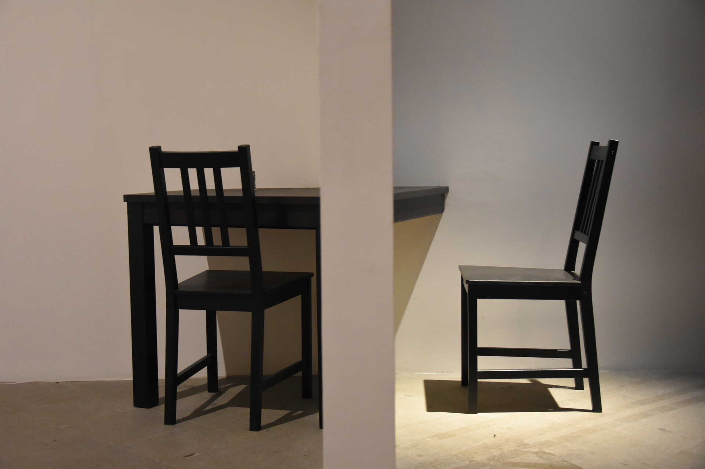
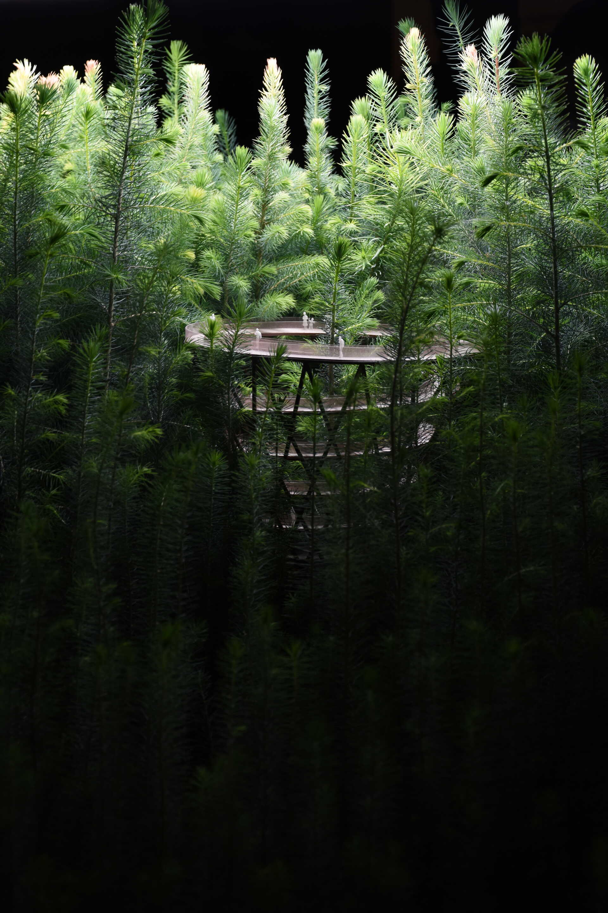
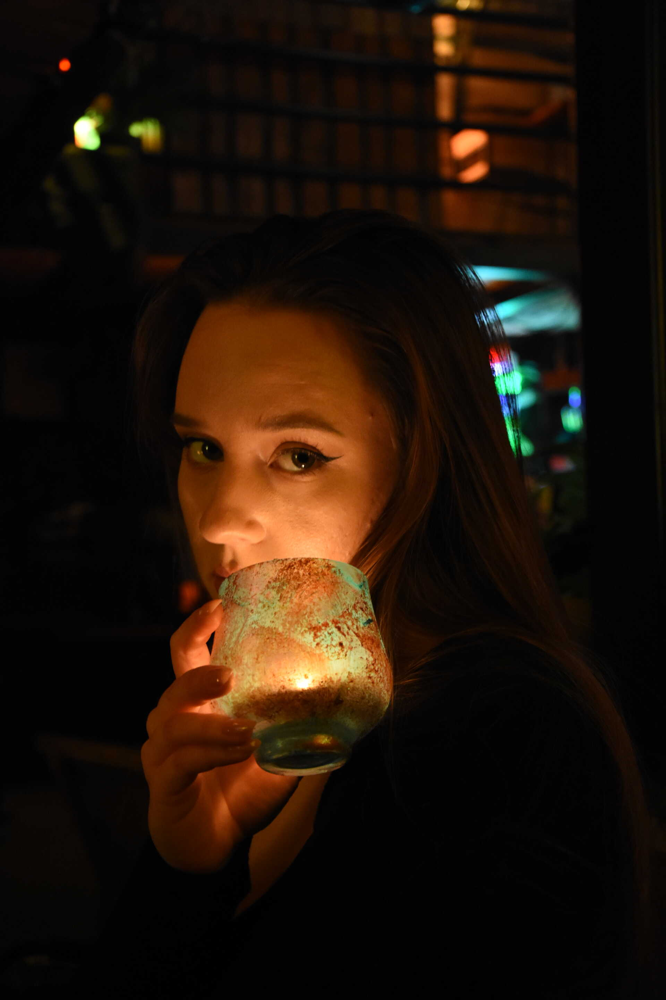
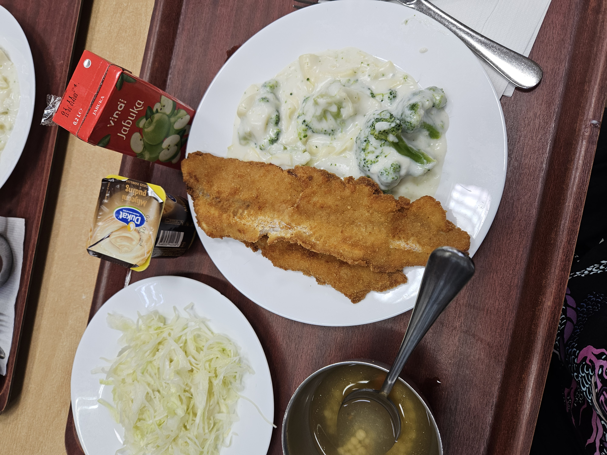
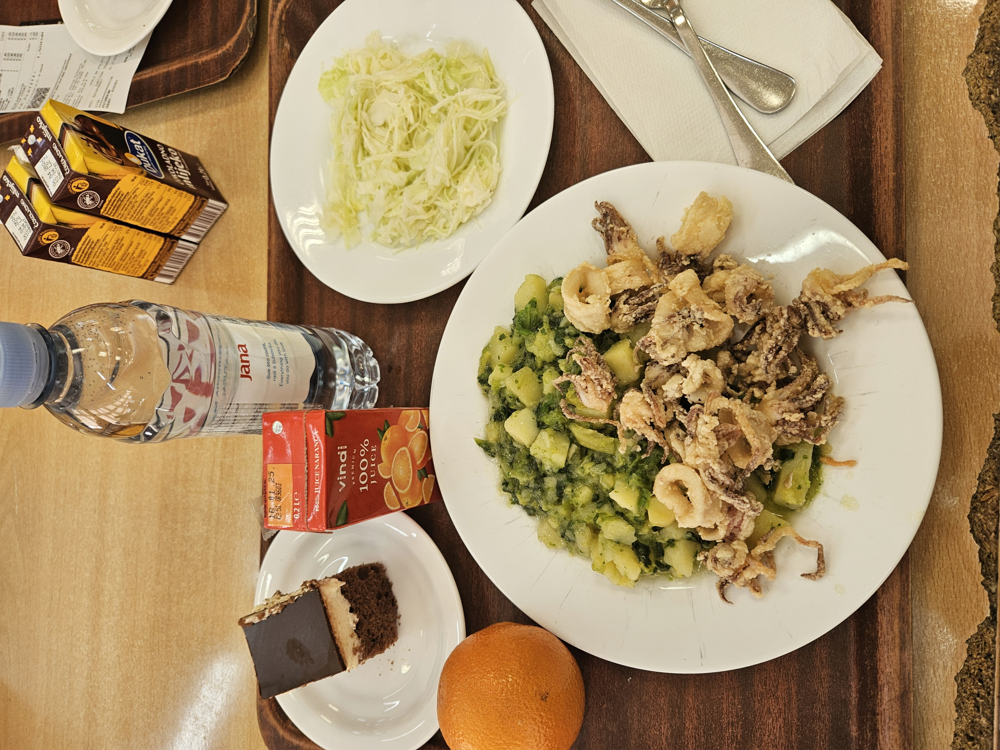
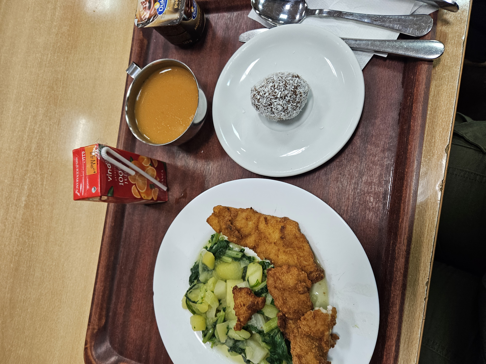
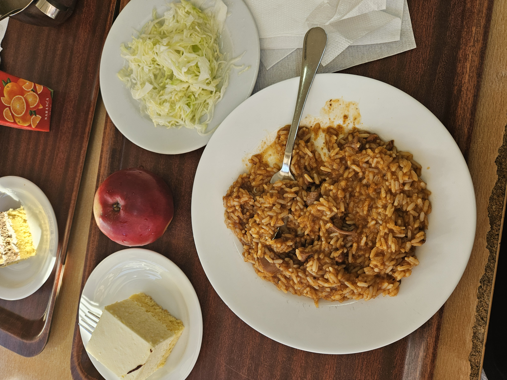

Zovem se Adriana Dujić i imam 22 godine. Grafički fakultet drugi je fakultet koji sam upisala, nakon što sam dvije godine provela na Arhitekturi u Splitu. Spoj iznimno teškog fakulteta sa gradom koji mi ni u jednu ruku nije pasao, doveo je do toga da još jednom razmislim što želim od svog života. Nakon godine rada, odlučila sam se za Grafički fakultet u Zagrebu. Vjerujem da je ta odluka u top 5 najboljih koje sam ikada donjela, a život sada bolji je nego što sam i zamišljala.
Prije sam obožavala crtati i fotografirati, ali nakon prvog fakulteta nisam imala snage kreirati išta kreativno. Srećom, sada je stvar drugačija i napokon sam na fakultetu koji mi potiče inspiraciju.
Ako scrollate dolje, naići ćete na moje stare, ali i nove radove, moja sretna iskustva i lijepa sjećanja.
FOTOGRAFIJE

Stolice
Prikazana je fotografija stolica odvojenih zidom. Fotografirana je na Venecijanskom bienalu, kada sam na drugoj godini arhitkture s fakultetom otišla na izložbu. Jako mi se sviđa ovaj kut gledanja, a svaki drugi kadar imao bi drugačiji dojam.

Šuma
Radi se o još jednoj fotografiji iz Venecije, a pošto je izložba te godine imala arhitektonsku tematiku, bila su prikazana svakakva arhitektnoska riješenja. Ovo mi se posebno dojmilo jer je dom sagrađen u dubini šume.

Lara
Ovo je Lara, moja dugogodišnja prijateljica. Znači mi toliko da mislim da zaslužuje mjesto u ovom radu.
NAJDRAŽA MI JELA U MENZI
Od početka ove akademske godine, stvorila sam si naviku fotografirati svako jelo u menzi. A pošto sam iz Zadra i jako mi nedostaju dalmatinska jela, predstavljam vam svoja najdraža morska jela u menzi
Lignje sa zeljem

Oslić s brokulom

Lignje s blitvom

Oslić s blitvom

Rižoto od liganja
KNJIGE
Za kraj, predstavljam vam knjige koje sam započela čitati, ali još nisam završila (što ne znači da su loše knjige, ja samo imam poprilično kratak raspon pažnje).
Vegeterijanka, Han Kang 1984, George Orwell Pouke života, Elisabeth Kubler, Ross David Kessler Ljudska djela, Han Kang Sedam muževa Evelyn Hugo, Taylor Jenkins Reid
Pozdravljam vas sa trailerom serije čija će druga sezona izaći sljedeći tjedan! Jedva čekam!